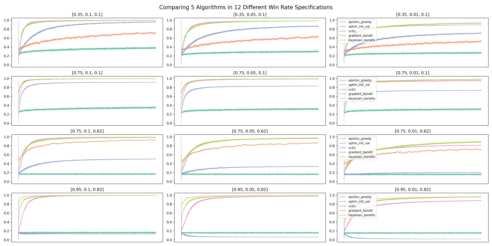

Zijun Luo
Randomized Controlled Trial (RCT) is the gold standard for establishing causality in experimental methods. It is used widely in clinical trials for new drugs or field experiments in social sciences and economics. In business, especially e-commerce, a related concept is A/B/N Testing. The main idea of RCT and A/B/N test is straightforward: individuals are randomly divided into groups to receive different treatments. Afterwards treatments, outcomes are being valuated and compared in order to find out which treatment works better/best. In RCT, a control group, where individuals receive a "placebo", is usually included. Note that placebo should be considered as a type of treatment too and individuals who receive a placebo are not getting "nothing". A placebo is something that has no therapeutic effect, i.e., it is not designed to cure a disease or an illness. But it can nevertheless positively impact the well-being of individuals who have received it, if due to nothing but psychological effects. As a result, it would be rather wrong to expect "no effect" from the the controlled group that receives the placebo in an RCT.
In the rest of this article, I will be using A/B/N test as the example because I want to stay away from the nitty-gritty details of RCT. I am using "A/B/N" to include tests with more than 2 versions. If you are only comparing two versions, it is an A/B test.
When I was interviewing for a data scientist job in 2022, the following was one of the interview questions: We are going to run an A/B test on a client's website. How long do we need to run the experiment for? Back then I knew about how to find minimum sample size based on hypothesis testing in Statistics, so I framed my answer that way. But I stopped in the middle while answering the question. Something I did not think seriously enough about popped into my head: how would I know the standard deviation, one of the required values to carry out the calculation for minimum sample size, before we even run the experiment? My interview went downhill from there. Needless to say, I did not get the job. However, the interviewer was nice enough to tell me that I should look into "power analysis".
I did. Suppose you have built an e-commerce website with two possible color pallettes, and you want to understand which color pallette would induce more purchases. You can randomly assign a visitor to the two versions of the website, and after a while, you will have a dataset with two columns: for each visitor, you recorded the version that the visitor was assigned to and the purchases that the visitor made. For , let's define the following values:
We can now calculate the "power" as
where is the pooled standard deviation. The "power", , follows a -distribution with degrees of freedom.
Suppose for the two versions in your A/B test, we can denote the two standard deviations as . Also suppose, for simplicity, you want . You can solve for from the above power analysis formula and obtain:
where is the total sample size (). It is easy to see that you will need a larger sample size if
But here is the problem: you do not know the values of and before the experiment. For , it may be less of an issue. Instead of the expected values, all you really need is the expected difference, which can be specified. For example, suppose your website is currently running Version A, and all you care about is that Version B can increase expected purchase amount by 15. In other words, . But you still need to know the standard deviations. How? Some suggest that you can run a short trial to estimate the standard deviation. But then, isn't the A/B test already a trial itself?
Here is another problem about classic A/B test design. After I became a data scientist, at another company, we actually ran an A/B test. The problem is that, according to the aforementioned power analysis, the experiment needed to be ran for at least 3 months, but we did not have that much time. After 1 month, our model (Version B) outperformed the existed model (Version A). Could we have declared our model to be the better one? According to classic A/B test design, the answer is "No" because we should not be "peeking" as the difference can be driven by random factors happened only in the first month of the experiment.
Now think about clinical trials for a new drug, where the "no peeking" rule can raise serious concerns. If a drug has proved its effectiveness in the first 500 patients, yet the power analysis tells you that you need to test it on 50,000 patients, what would you do? Isn't it unethical to continue to give a placebo to individuals who may benefit from the actual drug?
These two problems have bothered me for a while, until I learned about the approaches I will cover in this article. Here is a brief overview of how these algorithms work. Instead of having a predetermined sample size, the A/B test is deployed in real-time. Continued with our example of a website with two color pallettes, a visitor is randomly assigned to a version of the website on the first visit. An algorithm will then pick a version for a visitor. In general, the version that has received higher purchase values should get more visitors. But how do we know which one gives the higher payoff? Here, we face the Explore-Exploit Tradeoff.
In a nutshell, the explore-exploit tradeoff shows the following paradox: in order to find the best version, you need to explore, which means that the outcome of exploration necessarily improves the more you different versions. However, to maximize total payoff, you want to stick with the best version once (you think) you have found it, which is to exploit. This means that the outcome of exploitation necessarily deteriorates the more you different versions since there is one and only one best version.
How to handle the explore-exploit tradeoff constitutes the core difference among algorithms. Some algorithms, such as variants of the "greedy" family, really focuses on exploitation. The disadvantage is that such algorithm can easily "saddle" into the second-best as long as the second-best is "good enough", as I will show later when we discuss the Epsilon Greedy algorithm. Others, such as Upper Confidence Bound, put more emphasis on exploration, at least initially.
If you are reading this article because you think it may help you with your research project(s), you are not a stranger to the explore-exploit tradeoff. I remember a conversation I had with a professor not long after I graduated. I asked him if I should have given up on projects that I do not think that would end up in good journals. His answer was: but how do you know before you try? He had a point: my professor never published his PhD dissertation. He was successful after he has explored a new area of research. However, about 15 years after his dissertation, a paper on a closely related topic was published in a top journal. In retrospect, he may have explored more than the optimum, which was probably why he suggested me to exploit more.
We will begin our in-depth discussion of algorithms with Epsilon Greedy. For each algorithm, I aim to provide:
Python codeAlgorithms in the Greedy family applies a simple logic: choose the version that gives the best observed expected payoff. For simplicity, and for the rest of this article, let's consider an e-commerce website that has 5 different designs but sells a single product: an EveryDay-Carry (EDC) musical instrument for 69.99 dollars. If we run an A/B/N test on the web designs, only 2 outcomes are possible from each visitor: buy or not buy.
Here is the pseudocode for a simple Greedy algorithm:
loop:
j = argmax(expected bandit win rates)
x = reward (1 or 0) from playing bandit j
bandit[j].update_mean(x)
I used bandit instead of version here, and will be using these two terms interchangeably, because the problem we are working on is commonly known as the Multi-Armed Bandits problem in probability theory and reinforcement learning. The analogy comes from choosing among multiple slot machines in a casino since a single slot machine is referred to as a "one-armed bandit".
Let's take a closer look at the pseudocode. In this pseudocode, indexes visitor, indexes the website version (or bandit), and is 1 when the visitor buys and 0 otherwise. Furthermore, update_mean() is a function that takes the new value of x and updates the expected payoff for bandit j. To update the expected payoff after bandit j was played for the time, we have
This calculates the mean in constant time and memory, i.e., it requires only 3 values to calculate the mean, , regardless of the value of : , , and , whereas the number of values required to calculate the mean with the formula
increases with .
While not necessary, it can sometimes be a good idea to try all versions in the beginning. For example, for the first 50 visitors, we can send them to each design with equal probability. From that point on, the algorithm finds the version that gives the best expected payoff, and play that version.
It should be obvious that the simple Greedy algorithm has a problem: once it finds a bandit with a high enough payoff, it rarely switches. In other words, it almost never explores. The Epsilon Greedy algorithm provides a simple fix:
loop:
p = random number in [0, 1]
if p < epsilon:
j = choose a bandit at random
else:
j = argmax(expected bandit win rates)
x = reward (1 or 0) from playing bandit j
bandit[j].update_mean(x)
As the pseudocode shows, a random value is drawn when a new visitor has arrived. If the random value is smaller than the threshold, epsilon, set before the start of the experiment, then a random bandit is picked. Note that this randomly picked bandit can be the same as the one picked by argmax. To exclude such case only requires a few more lines of code. However, this is not a requirement of the Epsilon Greedy algorithm and the benefit of doing so is not obvious.
Let's now move onto the actual implementation of Epsilon Greedy in Python. Note that the script includes lines with the comment "only in demonstration". These are codes to generate the true win rate of different bandits, which you do not know when running a real-world experiment. This also means you can not use the scripts here in real-world problems without making necessary changes.
import numpy as np
import random
# set the number of bandits
N_bandits = 5
# set the number of trials
# only in demonstration
N = 100000
class BayesianAB:
def __init__(
self,
number_of_bandits: int = 2,
number_of_trials: int = 100000,
p_max: float = .75,
p_diff: float = .05,
p_min: float = .8
):
if p_min > p_max - p_diff:
raise ValueError("Condition p_min < p_max - p_diff not satisfied. Exit...")
self.prob_true = [0] * number_of_bandits # only in demonstration
self.prob_win = [0] * number_of_bandits
self.history = []
self.history_bandit = [] # for Monte Carlo
self.count = [0] * number_of_bandits # only in demonstration
# preference and pi are for gradient_bandit only
self.pref = [0] * number_of_bandits
self.pi = [1 / number_of_bandits] * number_of_bandits
# a and b are for bayesian_bandits only
self.alpha = [1] * number_of_bandits
self.beta = [1] * number_of_bandits
# number of trials/visitors
self.N = number_of_trials
# set the last bandit to have a win rate of 0.75 and the rest lower
# only in demonstration
self.prob_true[-1] = p_max
for i in range(0, number_of_bandits - 1):
self.prob_true[i] = round(p_max - random.uniform(p_diff, p_max - p_min), 2)
# Receives a random value of 0 or 1
# only in demonstration
def pull(
self,
i,
) -> bool:
return random.random() < self.prob_true[i]
# Updates the mean
def update(
self,
i,
k,
) -> None:
outcome = self.pull(i)
# may use a constant discount rate to discount past
self.prob_win[i] = (self.prob_win[i] * k + outcome) / (k + 1)
self.history.append(self.prob_win.copy())
self.history_bandit.append(i) # for Monte Carlo
self.count[i] += 1
####################
# epsilon greedy
def epsilon_greedy(
self,
epsilon: float = 0.5,
):
self.history.append(self.prob_win.copy())
for k in range(1, self.N):
if random.random() < epsilon:
i = random.randrange(0, len(self.prob_win))
else:
i = np.argmax(self.prob_win)
self.update(i, k)
return self.history
Let's break it down. First, we import two libraries: numpy and random. We will be using functions from these libraries such as argmax() from numpy and randrange() from random:
import numpy as np
import random
We then set three global parameters:
# set the number of bandits
N_bandits = 5
# set the number of trials/visitors
N = 100000
In practice, the value of N_bandits depends on the number of versions your experiment is set out to test, and the number of visitors, N, is unknown.
In this script, we are creating a class named BayesianAB, and put all the algorithms we cover in this article under BayesianAB. We initiate the class with the following values:
class BayesianAB:
def __init__(
self,
number_of_bandits: int = 2,
number_of_trials: int = 100000,
p_max: float = .75,
p_diff: float = .05,
p_min: float = .8
):
if p_min > p_max - p_diff:
raise ValueError("Condition p_min < p_max - p_diff not satisfied. Exit...")
self.prob_true = [0] * number_of_bandits # only in demonstration
self.prob_win = [0] * number_of_bandits
self.history = []
self.history_bandit = [] # for Monte Carlo
self.count = [0] * number_of_bandits # only in demonstration
# preference and pi are for gradient_bandit only
self.pref = [0] * number_of_bandits
self.pi = [1 / number_of_bandits] * number_of_bandits
# a and b are for bayesian_bandits only
self.alpha = [1] * number_of_bandits
self.beta = [1] * number_of_bandits
# number of trials/visitors
self.N = number_of_trials
The BayesianAB class accepts 5 parameters:
number_of_bandits has a default value of 2;number_of_trials indicates the number of rounds/visitors, which has a default value of 100,000;p_max is the highest win rate;p_diff is the smallest possible difference between the highest win rate and the second highest win rate;p_min is the lowest possible win rate, andt the condition p_min > p_max - p_diff must be met.The BayesianAB class pre-allocates 10 lists to store various values necessary for different tasks:
prob_true stores the true win rate of each bandit. These win rates are to be generated next. In practice, you do not know these true win rate values;prob_win stores the observed (expected) win rate of each bandit. Values in this list are to be updated during each round of the experiment;history stores the history of prob_win in each trial/round. This is important for both updating the mean in constant time (see above) and the evaluation of bandit/algorithm performances afterwards;history_bandit stores the history of what bandit was picked in each trial/round. This is useful when we need to run the Monte Carlo simulation for testbed;count stores the number of times that each bandit was chosen;pref and pi are values for the Gradient Bandit algorithm;alpha and beta are values used in Thompson Sampling, the last algorithm to be considered in this article;N stores the number of trials and is used by each method/algorithm in the BayesianAB class.The following lines generate the true win rates:
# set the last bandit to have a win rate of 0.75 and the rest lower
# only in demonstration
self.prob_true[-1] = p_max
for i in range(0, number_of_bandits - 1):
self.prob_true[i] = round(p_max - random.uniform(p_diff, p_max - p_min), 2)
The last bandit always has the highest win rate, p_max, and the rest of them are randomized between p_min and p_max - p_diff. I used this approach to allow for flexibility in specifying the number of bandits using N_bandits (or number_of_bandits inside the BayesianAB class).
Next, we define two functions used by almost every algorithm:
# Receives a random value of 0 or 1
# only in demonstration
def pull(
self,
i,
) -> bool:
return random.random() < self.prob_true[i]
# Updates the mean
def update(
self,
i,
k,
) -> None:
outcome = self.pull(i)
# may use a constant discount rate to discount past
self.prob_win[i] = (self.prob_win[i] * k + outcome) / (k + 1)
self.history.append(self.prob_win.copy())
self.history_bandit.append(i) # for Monte Carlo
self.count[i] += 1
The first function, pull(), returns either True or False depending on if the value of random.random() is less than the true win rate of bandit . This is unnecessary in practice. Instead, a call to either the BayesianAB class or a specific method (such as Epsilon Greedy) inside BayesianAB should be triggered with the arrival of a new visitor, and by the end of the visit, you would know if the visitor has purchased (True) or not (False). In Python, True is given a numerical value of 1 and False a value of 0.
The update() function updates the mean. It also adds the updated expected win rate to the list history and increase the count of bandit being picked by 1.
Here is the actual method inside BayesianAB that implements epsilon greedy:
def epsilon_greedy(
self,
epsilon: float = 0.5,
):
self.history.append(self.prob_win.copy())
for k in range(1, self.N):
if random.random() < epsilon:
i = random.randrange(0, len(self.prob_win))
else:
i = np.argmax(self.prob_win)
self.update(i, k)
return self.history
It follows the logic outlined in the pseudocode. Inside the for loop, these steps are followed:
epsilon which can be specified when the epsilon_greedy() method is called. epsilon also has a default value of . If this is True, then a random bandit is selected;update() function.The epsilon_greedy() method returns the list history, which stores the complete history for run as discussed earlier.
To call epsilon_greedy() and examine the results, we execute the following:
eg = BayesianAB(N_bandits)
print(f'The true win rates: {eg.prob_true}')
eg_history = eg.epsilon_greedy()
print(f'The observed win rates: {eg.prob_win}')
print(f'Number of times each bandit was played: {eg.count}')
Here, we call epsilon_greedy() with the default value for epsilon. This means the algorithm will explore half of the time. We also print out the true win rates, the expected win rates, and the number of times that each bandit was played. Here is the printed output from a particular run:
The true win rates: [0.37, 0.55, 0.67, 0.4, 0.75]
The observed win rates: [0.2062, 0.3354, 0.6717, 0.1953, 0.5526]
Number of times each bandit was played: [10200, 9945, 60001, 9789, 10064]
In the above run, the best bandit was NOT the one that was selected the most. The second best bandit, with a 0.67 win rate, was picked about 60% of the time, as dictated by the value of epsilon. Such outcome is due to the fact that the bandit with a 0.67 win rate did well in the beginning. Since it is close enough to 0.75, the default win rate of the best bandit, random jumps to the bandit with the 0.75 win rate were not enough to "flip" the results.
Also note that the expected win rates have not converged to the true win rates except for the "chosen" one after 100,000 visitors. However, if the number of visitors approaches infinity, which means that each version would be picked infinite times, all win rates would converge to their true values. This, in turn, means that the best bandit would eventually overtake the second-best if the experiment runs long enough. In other words, Epsilon Greedy guarantees the identification of the best bandit as approaches infinity.
We can visualize the outcome from the experiment with the following code:
import pandas as pd
import matplotlib.pyplot as plt
import seaborn as sns
def plot_history(
history: list,
prob_true: list,
k=N,
):
df_history = pd.DataFrame(history[:k])
plt.figure(figsize=(20, 5))
# Define the color palette
colors = sns.color_palette("Set2", len(prob_true))
for i in range(len(prob_true)):
sns.lineplot(x=df_history.index, y=df_history[i], color=colors[i])
# Create custom legend using prob_true and colors
custom_legend = [plt.Line2D([], [], color=colors[i], label=prob_true[i]) for i in range(len(prob_true))]
plt.legend(handles=custom_legend)
Then execute:
plot_history(history=eg.history, prob_true=eg.prob_true)
Here is the output from the above run:
We can also get the visualization for the first 100 visitors, which shows that the third bandit, the a 0.67 win rate, jumped ahead early:
plot_history(history=eg.history, prob_true=eg.prob_true, k=100)

The Optimistic Initial Values algorithm is one of my favorites (the other being the Gradient Bandit algorithm) amongst the algorithms discussed in this article. While Epsilon Greedy focused on "exploit" and can end up choosing the second-best version, the Optimistic Initial Values algorithm puts more focus on "explore" initially, while staying greedy, i.e., pick the strategy that shows the highest expected win rate. The name of this algorithm informs you about what it does: at the start of the experiment, each bandit is set to have a high expected win rate, i.e., we are "optimistic" about each bandit. This ensures that each of them is played a fair number of times initially. If we compare Epsilon Greedy to English auctions where the values go up over time, Optimistic Initial Value is comparable to Dutch auctions where the values go down over time. Here is the pseudocode:
p_init = 5 # a large value as initial win rate for ALL bandits
loop:
j = argmax(expected bandit win rates)
x = reward (1 or 0) from playing bandit j
bandit[j].update_mane(x)
Assuming you already have the code from the Epsilon Greedy section, you can add the following method inside the BayesianAB class to run the Optimistic Initial Values algorithm:
####################
# optimistic initial values
def optim_init_val(
self,
init_val: float = 0.99,
):
self.prob_win = [init_val] * len(self.prob_win)
self.history.append(self.prob_win.copy())
for k in range(1, self.N):
i = np.argmax(self.prob_win)
self.update(i, k)
return self.history
The only thing new here is the line that assigns init_val to prob_win in the beginning. We can execute the following to get results and visualization:
oiv = BayesianAB(N_bandits)
print(f'The true win rates: {oiv.prob_true}')
oiv_history = oiv.optim_init_val(init_val=0.99)
print(f'The observed win rates: {oiv.prob_win}')
print(f'Number of times each bandit was played: {oiv.count}')
# plot the entire experiment history
plot_history(history=oiv.history, prob_true=oiv.prob_true)
And following are outcomes from a typical run:
The true win rates: [0.6, 0.54, 0.62, 0.14, 0.75]
The observed win rates: [0.6633, 0.7493, 0.7491, 0.7493, 0.7521]
Number of times each bandit was played: [2, 168, 285, 65, 99479]

From the visualization below, you can see that the best bandit jumped ahead after about merely 15 visitors:

Note that I set init_val to 0.99 since we are comparing win rates that can not exceed 1. The larger the initial value, the more the algorithm explores initially. Because the Optimistic Initial Values algorithm was specifically designed to explore in the beginning, it can "fall behind" in reaching the best version, if ever, compared to other algorithms such as Epsilon Greedy. Note that if the best bandit is discovered early, the expected win rates of other bandits never converge to their true win rates in Optimistic Initial Values (but would in Epsilon Greedy). This is a common feature of several of the algorithms discussed in this article.
The theory of UCB is harder to fully grasp although its intuition and implementation are straightforward. To start, let's look back to the last two algorithms that we have discussed: Epsilon Greedy and Optimistic Initial Values. A common step in the implementation of both of these algorithms is to find the bandit that gives the best observed expected win rate. This is why both algorithms are said to be greedy. But can we do better, especially that we know these expected win rates are probabilistic? Put differently, we know that the more a certain bandit was selected, the closer its expected win rate is to its true win rate. But what about those bandits that were rarely picked?
That is where Upper Confidence Bound comes into play. The idea is that we should not be relying on the observed expected win rates alone in making decisions. We should give each version some "bonus points": if a version has been picked a lot, it gets a small bonus; but if a version has barely been barely chosen, it should get a larger bonus because, probabilistically, the observed expected win rate can be far from the true win rate if a version has not been played much.
If you are interested in the math, you can read the paper "Finite-time Analysis of the Multiarmed Bandit Problem". In the paper, the authors have outlined a function for the "bonus", which is commonly known as UCB1:
where is the total number of visitors at the time of computing the bonus, and is the number of times that bandit was chosen at the time of computing the bonus. Adding to the expected win rate gives the upper confidence bound:
Here is the pseudocode for UCB1:
loop:
Update UCB1 values
j = argmax(UCB1 values)
x = reward (1 or 0) from playing bandit j
bandit[j].update_mean(x)
Adding the following method into BayesianAB will implement UCB1:
####################
# upper confidence bound (UCB1)
def ucb1(
self,
c=1,
):
self.history.append(self.prob_win.copy())
bandit_count = [0.0001] * len(self.prob_win)
for k in range(1, self.N):
bound = self.prob_win + c * np.sqrt(np.divide(2 * np.log(k), bandit_count))
i = np.argmax(bound)
self.update(i, k)
if bandit_count[i] < 1:
bandit_count[i] = 0
bandit_count[i] += 1
return self.history
This is very similar to what we had before. One thing to note is that I give a very small initial value () to bandit_count to avoid the division of zero in the beginning of the experiment. Later, I reversed the value to 0 with the if statement. An alternative approach is to run the first several iterations on all versions before implementing UCB1 thereafter.
UCB1 has a parameter, , which controls the degree of exploration. Other things being equal, A larger value means a higher reward. The default value is set to 1 in the above script.
Executing the following will give us results and visualization for UCB1:
ucb = BayesianAB(N_bandits)
print(f'The true win rates: {ucb.prob_true}')
ucb_history = ucb.ucb1()
print(f'The observed win rates: {ucb.prob_win}')
print(f'Number of times each bandit was played: {ucb.count}')
# plot the entire experiment history
plot_history(history=ucb.history, prob_true=ucb.prob_true)
A typical run gives the following:
The true win rates: [0.65, 0.12, 0.63, 0.33, 0.75]
The observed win rates: [0.6505, 0.1165, 0.1928, 0.0774, 0.3794]
Number of times each bandit was played: [99470, 77, 103, 67, 282]

This particular run shows that UCB1 has also failed to identify the best version. Examining the first 100 visitors shows that the bandit with a .65 win rate jumped out early and never looked back. And I do not believe the algorithm can guarantee convergence even with infinite number of visitors:

Another algorithm that does not rely entirely on expected win rates is the Gradient Bandit algorithm. Not surprisingly, this algorithm is related to gradient ascent. With this algorithm, each bandit's probability of being chosen is determined according to a soft-max distribution:
where is the probability of bandit being picked for customer , is the preference for bandit at the time customer arrives, and is the total number of bandits in the experiment. In the case of only two bandits, this specification is the same as the logistic or sigmoid function.
When the first customer arrives, i.e., , it is custom to set the preference, , for all , to 0 so that every bandit has the same probability of getting picked. Suppose bandit is picked for customer , then the preference for is updated according to:
whereas the preferences for all are updated according to:
where is a "step-size" parameter.
The intuition of the Gradient Bandit algorithm is as follows. When the reward received from picking for customer is higher than the expected reward, the probability of picking in the future (next round) is increased. In our simple case with only two outcomes (buy and not buy), the reward is higher than the expected reward only if customer buys.
Let's take a look at the pseudocode:
H = [0] * number_of_bandits
loop:
pi = pi(H) # Calculates the soft-max distribution
i = random.choices(bandits, weights=pi)
gb.update()
where H.update() updates the values of (the bandit that was chosen) and (bandits that were not chosen).
Here is the Python implementation for Gradient Bandit:
####################
# gradient_bandit update
def gb_update(
self,
i,
k,
a,
):
outcome = self.pull(i)
for z in range(len(self.pref)):
if z == i:
self.pref[z] = self.pref[z] + a * (outcome - self.prob_win[z]) * (1 - self.pi[z])
else:
self.pref[z] = self.pref[z] - a * (outcome - self.prob_win[z]) * self.pi[z]
self.prob_win[i] = (self.prob_win[i] * k + outcome) / (k + 1)
return self.pref
# gradient bandit algorithm
def gradient_bandit(
self,
a=0.2,
):
self.history.append([self.pi.copy(),
self.pref.copy(),
self.prob_win.copy()])
for k in range(1, self.N):
self.pi = np.exp(self.pref) / sum(np.exp(self.pref))
pick = random.choices(np.arange(len(self.pref)), weights=self.pi)
i = pick[0]
self.pref = self.gb_update(i, k, a)
self.count[i] += 1
self.history.append([self.pi.copy(),
self.pref.copy(),
self.prob_win.copy()])
self.history_bandit.append(i) # for Monte Carlo
return self.history
Here are some notes on the Python implementation of the Gradient Bandit algorithm:
pref and pi at the start of the BayesianAB class;gb_update(), is necessary since we need to update the preference function for every bandit in each round;gradient_bandit() function takes 1 parameter: , which is the step-size parameter. The default value of is set to 0.2. The smaller the value of , the more the algorithm explores;gradient_bandit() saves history differently: each row in history is an array of 3 lists. In order to examine the performance of the Gradient Bandit algorithm, we not only save the expected win rates, but also preferences and the values from the soft-max distribution, ;choices() from the random library picks a value from a list based on weights. In this case, the weights is given by the soft-max distribution;Because gradient_bandit() saves arrays in history, we also need to update the plot_history() function:
def plot_history(
history: list,
prob_true: list,
col=2,
k=N,
):
if type(history[0][0]) == list: # To accommodate gradient bandit
df_history = pd.DataFrame([arr[col] for arr in history][:k])
else:
df_history = pd.DataFrame(history[:k])
plt.figure(figsize=(20, 5))
# Define the color palette
colors = sns.color_palette("Set2", len(prob_true))
for i in range(len(prob_true)):
sns.lineplot(x=df_history.index, y=df_history[i], color=colors[i])
# Create custom legend using prob_true and colors
custom_legend = [plt.Line2D([], [], color=colors[i], label=prob_true[i]) for i in range(len(prob_true))]
plt.legend(handles=custom_legend)
The updates occurred in
if type(history[0][0]) == list: # To accommodate gradient bandit
df_history = pd.DataFrame([arr[col] for arr in history][:k])
else:
df_history = pd.DataFrame(history[:k])
with the added parameter col. This is to accommodate the arrays saved in history by gradient_bandit(). The if statement checks whether the first element in history is a list. If it is, then history was saved from gradient_bandit() and we would need to extract the specific column, given by col, for plotting. The default value of col is 2, which is to plot the history of the win rates.
Executing the following will run the Gradient Bandit algorithm:
# Gradient bandit
gb = BayesianAB(N_bandits)
print(f'The true win rates: {gb.prob_true}')
gb_history = gb.gradient_bandit()
print(f'The observed win rates: {gb.prob_win}')
print(f'Number of times each bandit was played: {gb.count}')
# plot the entire experiment history
plot_history(history=gb.history, prob_true=gb.prob_true)
Here are results from a typical run:
The true win rates: [0.17, 0.56, 0.17, 0.7, 0.75]
The observed win rates: [0.2564, 0.5514, 0.0105, 0.6636, 0.7498]
Number of times each bandit was played: [35, 67, 22, 196, 99679]

As usual, we can examine what happened after 100 customers. Interestingly, the bandit with the highest win rate did not lead after only 100 customers:

We can plot the evolution of the preference with the following:
# plot preference
plot_history(history=gb.history, prob_true=gb.prob_true, col=1)

And plot the soft-max function with the following:
# plot pi
plot_history(history=gb.history, prob_true=gb.prob_true, col=0)

There are several reasons why the Gradient Bandit algorithm is one of my favorites:
preference to model choices;logistic function, used in logistic regression, which is the special case of soft-max with only two bandits;soft-max function, known as "contest success function", is widely used in the literature.Thompson Sampling, or Bayesian Bandits, takes another (big) step forward. In our discussion on Upper Confidence Bound, we acknowledged the fact that using only the expected rate to represent the performance of a bandit is not accurate. To tackle this, UCB1 adds a "bonus": the bonus is smaller for the bandits that were played more, and larger for the bandits that were played less. Then in our discussion on Gradient Bandit, each bandit's chance of being picked is described by a soft-max distribution.
To push these ideas further, and as the name Thompson Sampling has hinted, we ask if we could construct a probability distribution to describe the expected win rates of all the bandits. As it turns out, this is possible, as everything, including parameters, are considered random variables in Bayesian Statistics. For example, with Normal Distribution, we often speak about fixed values of mean and variance. But in Bayesian Statistics, the mean and variance of a Normal Distribution are two random variables and they can be described by probability distributions.
The mathematical derivation of Thompson Sampling requires the use of conjugate prior, which I will discuss here briefly, before returning to the Python implementation of Thompson Sampling.
Recall the Bayes Rule:
where the four parts are called, respectively
In Bayesian Statistics, if the posterior distribution is in the same probability distribution family as the prior probability distribution, the prior and posterior are then called conjugate distributions, and the prior is called a conjugate prior for the likelihood function.
With conjugate priors, the updating in a Bayesian approach reduces to the updates of hyperparameters that are used to describe both the prior and posterior distributions, since they are the same. I will leave the details to a Statistics textbook, but for our purpose, since our example concerns of binary outcomes (buy or not buy), our likelihood function is that of Bernoulli. As it turns out, the conjugate prior for a Bernoulli likelihood function is the Beta distribution, which has two hyperparameters: and .
Now that we have established that Beta distribution is the conjugate prior for Bernoulli, the problem of Thompson Sampling is reduced to
Since Thompson Sampling is mechanical different from the previous algorithms, we need to develop special functions and methods to implement Thompson Sampling. Here is a pseudocode:
loop:
bb_sample() = sampling from Beta function for bandit b
j = argmax(b.sample() for b bandits)
x = T/F from playing bandit j
bandit[j].bb_update(x)
The two functions that need to be added are bb_sample() and bb_update(). Here is the full Python implementation:
from scipy.stats import beta
####################
# bayesian_bandits update
def bb_update(
self,
a,
b,
i,
):
outcome = self.pull(i)
a[i] += outcome
b[i] += 1 - outcome
self.count[i] += 1
return a, b
# Bayesian bandits
# For Bernoulli distribution, the conjugate prior is Beta distribution
def bayesian_bandits(
self,
sample_size: int = 10,
):
a_hist, b_hist = [], []
a_hist.append(self.alpha.copy())
b_hist.append(self.beta.copy())
for k in range(1, self.N):
sample_max = []
for m in range(len(self.prob_true)):
m_max = np.max(np.random.beta(self.alpha[m], self.beta[m], sample_size))
sample_max.append(m_max.copy())
i = np.argmax(sample_max)
self.alpha, self.beta = self.bb_update(self.alpha, self.beta, i)
a_hist.append(self.alpha.copy())
b_hist.append(self.beta.copy())
self.history_bandit.append(i) # for Monte Carlo
self.history = [a_hist, b_hist]
return self.history
Let's walk through this script:
alpha and beta at the start of the BayesianAB class. They are the hyperparameters in the Beta distribution;beta from scipy.stats since the conjugate prior for Bernoulli distribution is the Beta distribution.bb_update() updates the hyperparameter values based on the outcome from the last visitor for bandit : if the outcome was True, then the value of alpha increases by 1; otherwise, the value of beta increases by 1.For the actual implementation of the Bayesian Bandits in the bayesian_bandits() method, it is largely consistent with what we have been doing in other algorithms. The main differences include:
alpha and beta;alpha and beta.Due to these changes, we also need a new function for visualizing the history returned by bayesian_bandits():
def bb_plot_history(
history: list,
prob_true: list,
k=-1,
):
x = np.linspace(0, 1, 100)
legend_str = [[]] * len(prob_true)
plt.figure(figsize=(20, 5))
for i in range(len(prob_true)):
a = history[0][k][i]
b = history[1][k][i]
y = beta.pdf(x, a, b)
legend_str[i] = f'{prob_true[i]}, alpha: {a}, beta: {b}'
plt.plot(x, y)
plt.legend(legend_str)
We can now run a simulate for Thompson Sampling by executing the following:
bb = BayesianAB(N_bandits)
print(f'The true win rates: {bb.prob_true}')
bb_history = bb.bayesian_bandits(sample_size=10)
print(f'The observed win rates: {np.divide(bb.history[0][-1], bb.count)}')
print(f'Number of times each bandit was played: {bb.count}')
# plot the entire experiment history
bb_plot_history(history=bb.history, prob_true=bb.prob_true)
Outcomes from a typical run look like the following:
The true win rates: [0.15, 0.67, 0.11, 0.47, 0.75]
The observed win rates: [0.1, 0.6563, 0.1667, 0.4545, 0.7500]
Number of times each bandit was played: [10, 355, 12, 44, 99578]

It is also interesting to look at what happened after only 100 visitors:

Two differences between Thompson Sampling and the other algorithms we have discussed should be noted. First, as already mentioned, Thompson Sampling attempts to build a distribution for the bandits. Comparing the two visuals from 100 visitors and all visitors shows that, although the best version has jumped out early, the distribution is much tighter/narrower at the end of the experiment, indicating greater "confidence" for the estimated expected win rate. Second, and importantly, the Thompson Sampling algorithm has no problem distinguishing between a bandit with a 0.67 win rate and the best version with a win rate of 0.75.
It is important to compare the five algorithms in various settings. Following Sutton and Barto (2020), I conduct a 5-armed testbed. The idea of the testbed is to run the algorithms many times, say 2,000, then calculates the success rate, which is the percentage that the best bandit was picked in each round. For example, suppose we run the Epsilon Greedy algorithm 2,000 times with different win rates. We look at the bandit picked on the 100th visitor and found that, out of the 2,000 runs the best bandit was picked 800 times. Then at the 100th round/visitor, the success rate was 0.4. When we developed the BayesianAB() class, we were already anticipating the implementation of the testbed. Specifically, in the following functions/methods:
update()gradient_bandit()bayesian_bandits()there is
self.history_bandit.append(i)
which records the which bandit was picked at each round. The parameters p_max, p_diff, and p_min also allow the BayesianAB() class to generate different win rates. We will now develop a script to implement the testbed where the BayesianAB() class is imported and called:
import numpy as np
import pandas as pd
import matplotlib.pyplot as plt
import seaborn as sns
from multiprocessing import Pool, cpu_count
from functools import partial
from bayesianab import BayesianAB
# set the number of bandits
N_bandits = 5
# set the number of visitors
N = 10001
# set the number of trials
M = 2000
def worker(algo, number_of_bandits, number_of_trials, p_max, p_diff, p_min, n):
bayesianab_instance = BayesianAB(number_of_bandits, number_of_trials, p_max, p_diff, p_min)
getattr(bayesianab_instance, algo)()
return bayesianab_instance.history_bandit
def monte_carlo(
algos,
m=500,
n=10001,
p_max: float = .75,
p_diff: float = .05,
p_min: float = .1
):
algos_hist = {algo: [] for algo in algos}
for algo in algos:
print(f'Running {algo}...')
with Pool(cpu_count()) as pool:
func = partial(worker, algo, N_bandits, n, p_max, p_diff, p_min)
results = list(pool.imap(func, range(m)))
algos_hist[algo] = results
return algos_hist
def run_monte_carlo(
algos,
m,
n,
p_values,
):
trials = {}
df_all = {}
for i in range(len(p_values)):
print(f'The p_values are {p_values[i]}')
trials[f'p{i}'] = monte_carlo(algos,
m,
n,
p_values[i][0],
p_values[i][1],
p_values[i][2],)
for i in range(len(p_values)):
df = pd.DataFrame()
for j in algos:
lst = [0] * (N - 1)
for k in range(M):
lst = np.array(lst) + np.array([1 if x == 4 else 0 for x in trials[f'p{i}'][j][k]])
df[j] = (lst / M).tolist()
df_all[f'p{i}'] = df.copy()
return df_all
def plot_monte_carlo(
df_all,
algos,
col,
row,
):
figure, axis = plt.subplots(row, col, figsize=(20, 10))
colors = sns.color_palette("Set2", len(algos))
m = 0 # column index
n = 0 # row index
for key in df_all:
ax = axis[n, m]
for i in range(len(algos)):
sns.lineplot(x=df_all[key].index, y=df_all[key][algos[i]], linewidth=0.5, color=colors[i], ax=ax)
ax.set_ylabel('')
ax.set_title(prob_list[n * 3 + m])
ax.set_xticks([])
if m == 2:
# Create custom legend using prob_true and colors
custom_legend = [plt.Line2D([], [], color=colors[i], label=algos[i]) for i in range(len(algos))]
ax.legend(handles=custom_legend, loc='upper left', fontsize=9)
n += 1
m = 0
else:
m += 1
figure.suptitle('Comparing 5 Algorithms in 12 Different Win Rate Specifications', fontsize=16)
# Adjust the spacing between subplots
plt.tight_layout()
plt.savefig("comparison.png", dpi=300)
# plt.show()
if __name__ == "__main__":
algorithms = ['epsilon_greedy', 'optim_init_val', 'ucb1', 'gradient_bandit', 'bayesian_bandits']
prob_list = [[.35, .1, .1], [.35, .05, .1], [.35, .01, .1],
[.75, .1, .1], [.75, .05, .1], [.75, .01, .1],
[.75, .1, .62], [.75, .05, .62], [.75, .01, .62],
[.95, .1, .82], [.95, .05, .82], [.95, .01, .82],
]
results_df = run_monte_carlo(algorithms, M, N, prob_list)
plot_monte_carlo(results_df, algorithms, 3, 4)
Some explanations may be instructive. First, since we will be calling the same functions many times, I decided to use parallelization, which is through the multiprocessing library. In the script, the worker() function defines the task (or worker) for parallelization. The core function in the script, monte_carlo(), accepts six arguments:
algos contains a list of algorithms. The algorithms should match the names given as methods in the BayesianAB() class. In our case, we havealgorithms = ['epsilon_greedy', 'optim_init_val', 'ucb1', 'gradient_bandit', 'bayesian_bandits']
m is the number of simulations/trials to run. The default value is 500. We will actually be running 2000 simulations;n is the number of rounds/visitors in each simulation. A default value of 10001 means it will have 10000 visitors;p_max is the highest win rate;p_diff is the smallest possible difference between the highest win rate and the second highest win rate;p_min is the lowest possible win rate.We will run simulations with 12 different combinations of p_max, p_diff, and p_min, given in the following list:
prob_list = [[.35, .1, .1], [.35, .05, .1], [.35, .01, .1],
[.75, .1, .1], [.75, .05, .1], [.75, .01, .1],
[.75, .1, .62], [.75, .05, .62], [.75, .01, .62],
[.95, .1, .82], [.95, .05, .82], [.95, .01, .82],
]
The run_monte_carlo() function calls the monte_carlo() function, then processes the results and calculate success rate in each round. The results are stored in a dictionary named df_all.
The plot_monte_carlo() function, as the name suggests, plots the results in a 4-by-3 grid. Each subplot corresponds to a certain combination of [p_max, p_diff, p_min] which is the titles of the subplots.
Here is the resulted plot with 2,000 simulations, each with 10,000 rounds/visitors:

Several results are worth mentioning:
Thompson Sampling and Gradient Bandit both do consistently well. Thompson Sampling has the best overall performance, picking the best bandit in over 90% of the simulations at the end of 10,000 rounds. It also edged out Gradient Bandit when p_diff is 0.01, which means there can be a close second-best bandit;Epsilon Greedy algorithm performs consistently regardless of win rate settings, but at a poor 20% success rate at picking the best bandit. This may be partly due to a relatively high value of epsilon at 0.5;UCB1. When the win rate of the best bandit is at 0.95, UCB1's performance can be puzzling. In part, it may be a the result of a relatively high c value, since the default is 1. Intuitively, when the best bandit has a win rate of 0.95, and especially when there exists a close second-best, the "bonus" that UCB1 can give to a bandit is small. After all, the win rate is not to be exceeding 1. As a result, UCB1 has a hard time distinguishing between the best bandits and others that are almost as good. It should be noted that UCB (not UCB1) has the best performance in the testbed in Sutton and Barto (2020), but the authors also acknowledged that UCB's application beyond the Multi-Armed Bandit problem is limited (in the context of reinforcement learning).In this article, I have introduced five algorithms that can be used in real-time A/B Testing and Randomized Controlled Trials. Compared to traditional methods that often use Power Analysis to determine the minimum sample size, algorithms introduced in this article have one additional advantage: They can be easily extended to experiments with more than 2 choices/versions/bandits, as shown throughout the article.
The algorithms introduced in this article are known as algorithms for the Multi-Armed Bandit problem, which is considered as the simplest form of reinforcement learning. We will come back to more reinforcement learning algorithms and problems in later articles.
Two extensions of the Multi-Armed Bandit problem should be mentioned: Non-stationary Bandit and Contextual Bandit. Non-stationary Bandit is the situation in which that the win rates change over time. One particular algorithm that we introduced in this article is known to do badly in non-stationary bandit problems: Optimistic Initial Values. The reason is obvious. Optimistic Initial Values algorithm is designed to explore aggressively in the beginning. When the win rates change after this initial exploration stage has ended, it is hard for it to change course.
As the name suggested, Contextual Bandit means that there exists contextual information to be used when making a decision. In a simple example, a casino may have slot machines in different colors, and the colors are not random: the green machines have higher win rates than the red ones. A new player would not know that information at first, but as time goes on and if the player has explored enough, it is possible to figure out the association between color and win rate, and hence decisions are made accordingly. This is also why Contextual Bandit is also known as Associative Search. We will come back to this in another article, since Contextual Bandit algorithms can be used in regression problems.
(Visit my GitHub for the latest Python scripts: https://github.com/DataHurdler/Econ-ML/tree/main/Multi-Arm Bandits)